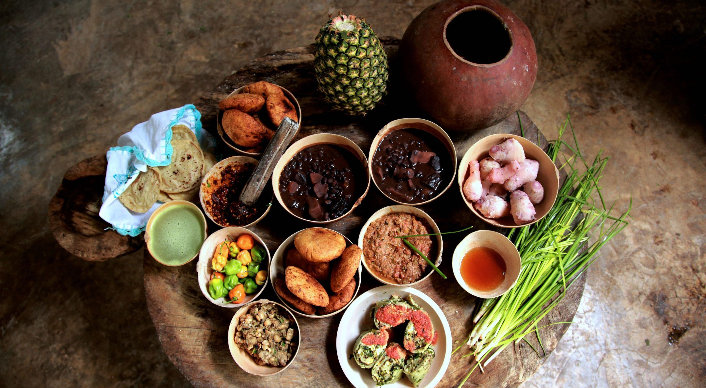
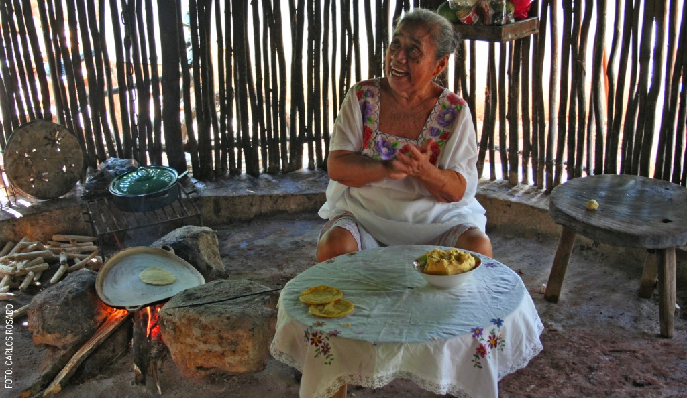

GASTRONOMIA
La gastronomía maya antigua era diversa y extensa. Se empleaban muchos tipos diferentes de recursos, incluyendo ingredientes marítimos, flora y fauna, y la comida se obtenía o producía a través de estrategias como la caza, el forrajeo y la produccion agricola a gran escala. La domesticacion de plantas se concentraba en distintos alimentos básicos, de los cuales el más importante era el maiz.
La gastronomía maya, fundamentada en el maíz, frijol, calabaza y chiles, es una tradición milenaria rica en sabores intensos y técnicas ancestrales. Destaca el uso del pib (horno subterráneo) y el achiote, con platillos icónicos como la cochinita pibil, papadzules, relleno negro y el pozol, reflejando una profunda conexión cultural con la tierra. 
Ingredientes Principales:
Maíz: Base de la alimentación (tortillas, atoles, pozol)
Achiote: Condimento característico que da color rojo y sabor.
Hierbas: Chaya (de alto valor medicinal), epazote, cilantro.
Proteínas: Venado, pavo (guajolote), armadillo, jabalí, e insectos, además de pescados y mariscosen zonas costeras.
Técnicas Ancestrales:
Pib: Cocción en horno de tierra bajo el suelo.
K´ooben: Cocina tradicional.
Asado y ahumado : Leña seco o verde
Base de la alimentación 
El alimento principal de los mayas era el maíz, considerado sagrado, ya que creían que los se
Con el maíz elaboraban:
Tortillas
Tamales
Atole
Pozole
Otros alimentos importantes
Además del maíz, su dieta incluía una gran variedad de productos naturales:
Frijol
Calabaza
Chile
Cacao
Jitom at e
Aguacate
Estos ingredientes formaban la base de muchos de sus platillos.
Consumo de carne
Los mayas también consumían carne, aunque en menor cantidad:
Venado
Pavo
Conejo
Pescado
La caza y la pesca eran actividades importantes para complementar su dieta.
El cacao: bebida sagrada
El cacao era muy valioso. Con él preparaban una bebida amarga(parecida al chocolate, pero sin azúcar), que era consumida por nobles y en ceremoniasreligiosas. También se usaba como moneda.
Técnicas de preparación
Los mayas utilizaban diferentes formas de cocinar:
Cocción en comales.
Hervido en ollas de barro.
Cocción bajo tierra (como el pib).
Una técnica que aún se usa hoy en lugares como Yucatán es el pib, donde los alimentos se cocinan enterrados con piedras calientes.